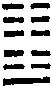
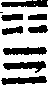
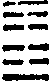
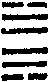
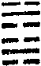

周易禪解卷第四
上經之四
(震下離上)
噬嗑。亨。利用獄。
約世道。則大觀在上。萬國朝宗。有不順者。噬而嗑之。舜伐有苗。禹戮防風之類是也。約佛法。則僧輪光顯之時。有犯戒者治之。約觀心。則妙觀現前。隨其所發煩惱業病魔禪慢見等境。即以妙觀治之。皆所謂亨而利用獄也。
彖曰。頤中有物。曰噬嗑。噬嗑而亨。剛柔分。動而明。雷電合而章。柔得中而上行。雖不當位。利用獄也。
王道以正法養天下。佛法以正教養僧伽。觀心以妙慧養法身。皆頤之象也。頑民梗化而須治。比丘破戒而須治。止觀境發而須觀。皆有物之象也。剛柔分。則定慧平等。動而明。則振作而智照不昏。雷電合而章。則說默互資。雷如說法。電如入定放光也。二五皆柔。故柔得中。即中道妙定也。上行者。震有奮發之象。離有麗天之象。雖不當位者。六五以陰居陽。如未入菩薩正位之象。然觀行中定慧得所。故于所發之境。善用不思議觀以治之也。
象曰。雷電噬嗑。先王以明罰敕法。
明罰即所以敕法。如破境即所以顯德也。
初九。屨校滅趾。無咎。象曰。屨校滅趾。不行也。
夫噬嗑者。不論世法佛法。自噬噬他。皆須制之于早。不可釀至于深。又須得剛克柔克之宜。不可重輕失準。今初九在卦之下。其過未深。以陽居陽。又得其正。故但如屨校滅趾。即能懲惡不行而無咎也。滅趾。謂校掩其趾。
六二。噬膚滅鼻。無咎。象曰。噬膚滅鼻。乘剛也。
陰柔中正。其過易改。故如噬膚。下乘初九之剛。故如滅鼻。滅鼻。謂膚掩其鼻。
六三。噬腊肉。遇毒。小吝。無咎。象曰。遇毒。位不當也。
在下之上。過漸深矣。以陰居陽。又有邪慧。如毒。吝可知也。然當噬嗑之時。決不至于怙終。故得無咎。
田獵射獸。矢鋒入骨而未拔出。今噬乾胏時。方乃得之。亦可畏矣。此喻積過已久也。然剛而不過。必能自克。故利于艱貞則吉。
柔雖如肉。而過成已久。如肉已乾矣。賴有中德可貴。如得黃金。守此中德之貞。兢兢惕厲。庶可復于無過耳。
上九。何校滅耳。凶。象曰。何校滅耳。聰不明也。
過惡既盈。不可復救。如荷厚枷。掩滅其耳。蓋由聰聽不明。不知悔過遷善以至此也。
觀心釋者。初九境界一發。即以正慧治之。如滅趾而令其不行。六二境發未深。即以正定治之。所噬雖不堅硬。未免打失巴鼻。六三境發漸甚。定慧又不純正。未免為境擾亂。但不至于墮落。九四境發夾雜善惡。定慧亦不純正。縱得小小法利。未證深法。六五純發善境。所得法利亦大。然猶未入正位。仍須貞厲乃得無咎。上九境發極深。似有定慧。實則不中不正。反取邪事而作聖解。永墮無聞之禍也。
(離下艮上)
賁。亨。小利有攸往。
約世道。則所噬既嗑之後。偃武修文。約佛法。則治罰惡僧之後。增設規約。約觀心。則境發觀成之後。定慧莊嚴。凡此皆亨道也。然世法佛法。當此之時。皆不必大有作為。但須小加整飾而已。
彖曰。賁。亨。柔來而文剛。故亨。分剛上而文柔。故小利有攸往。天文也。文明以止。人文也。觀乎天文以察時變。觀乎人文以化成天下。
賁則必亨。以其下卦本乾。而六二以柔來文之。則是質有其文。亦是慧有其定。故亨也。上卦本坤。而上九分剛以文之。則是文有其質。亦是定有其慧。故小利有攸往也。文質互資。定慧相濟。性德固然。非屬強設。名為天文。體其有定之慧寂而常照。為文明。體其有慧之定。照而常寂。為止。是謂以修合性。名為人文。性德則具造十界。故觀之可察時變。修德則十界全歸一心。故觀之可化成天下。
象曰。山下有火。賁。君子以明庶政。無敢折獄。
賁非折獄之時也。庶政苟明。則可以使民無訟矣。佛法釋者。山下有火。外止內明。故于三千性相之庶政。一一明之。了知一切法正一切法邪。終不妄于其中判斷一是一非。而生取捨情見。如無敢折獄也。
初九。賁其趾。舍車而徒。象曰。舍車而徒。義弗乘也。
卦雖以剛柔相文。得名為賁。而實非有事于矯飾也。故六爻皆取本色自賁。而終極于白賁。正猶詩所謂素以為絢。蓋天下之真色。固莫有勝于白者。今初九抱德隱居。晚食以當肉。安步以當車。乃以義自賁者也。
六二。賁其須。象曰。賁其須。與上興也。
九三。賁如濡如。永貞吉。象曰。永貞之吉。終莫之陵也。
剛正而居明體之上。足以潤及于六二六四。而使之同為聖賢。乃以師道自賁者也。
六四。賁如皤如。白馬翰如。匪寇婚媾。象曰。六四。當位疑也。匪寇婚媾。終無尤也。
柔而得正。知白賁之可貴。故求賢無厭倦心。近則親乎九三。俯則應乎初九。仰則宗乎上九。無一非我明師良友。即六二六五。亦皆我同德相輔之朋。見賢思齊。見不賢而自省。安有寇哉。蓋由居上卦之下。則是上而能下。不敢自信自專。乃以虛心自賁者也。
六五。賁于丘園。束帛戔戔。吝。終吉。象曰。六五之吉。有喜也。
柔中而有陽剛之志。能知道德之樂。而不以勢位自驕。視天位之尊與丘園等。如大禹之菲飲食。惡衣服。卑宮室。為束帛戔戔吝惜之象。實則吾無間然而終吉。蓋以盛德自賁者也。
上九。白賁。無咎。象曰。白賁無咎。上得志也。
以剛居艮止之極。又在卦終。而居陰位。則非過剛。年彌高。德彌邵。純淨無疵。如武公之盛德至善以自賁者也。
佛法釋者。初九以施自賁。六二以戒自賁。九三以忍自賁。六四以進自賁。六五以定自賁。上九以慧自賁。又初九為理賁。不以性德濫修德故。六二為名字賁。從此發心向上故。九三為觀行賁。不可暫忘故。六四為相似賁。不住法愛故。六五為分證賁。于三諦不漏失故。上九為究竟賁。復于本性。無纖瑕故。
(坤下艮上)
剝。不利有攸往。
彖曰。剝。剝也。柔變剛也。不利有攸往。小人長也。順而止之。觀象也君子尚消息盈虛。天行也。
約世道。則偃武修文之後。人情侈樂。國家元氣必從此剝。約佛法。則規約繁興之後。真修必從此剝。約觀心有二義。一約得邊。則定慧莊嚴之後。皮膚脫盡。真實獨存。名之為剝。一約失邊。則世間相似定慧。能發世間辯才文彩。而于真修之要反受剝矣。約得別是一途。今且約失而論。則世出世法皆不利有攸往。所謂不利有攸往者。非謂坐聽其剝。正示挽回之妙用也。往必受剝。不往。則順而止之。所以挽回其消息盈虛之數。而合于天行也。
象曰。山附于地。剝。上以厚下安宅。
山附于地。所謂得乎丘民而為天子也。百姓足君孰與不足。故厚下乃可安宅。此救剝之妙策也。觀心釋者。向上事。須從腳跟下會取。正是此意。
六爻約世道。則朝野無非陰柔小人。惟一君子高居塵外。約佛化。則在家出家。皆以名利相縻。惟一聖賢遠在蘭若。約觀心。則修善斷盡。惟一性善從來不斷。
初六。剝床以足。蔑貞凶。象曰。剝床以足。以滅下也。
床者所以棲身。剝床則身無所棲矣。初在最下。故如剝足。于世法為惡民。于佛法為惡伽藍民。于觀心為剝損戒足也。別約得者。是剝去四惡趣因。然設無四惡趣。則大悲無所緣境。故誡以蔑貞凶。
六二。剝床以辨。蔑貞凶。象曰。剝床以辨。未有與也。
于世法為惡臣。于佛法為惡檀越。于觀心為剝損禪定。無定。則散亂不能辨理。故未有與。別約得者。是剝去人天散善。然設無人天散善。則無以攝化眾生。故亦誡以蔑貞凶。
六三。剝之無咎。象曰。剝之無咎。失上下也。
于世法。為混跡小人之君子。于佛法。為有正見之外護。于觀心。為剝損智慧。剝慧則不著于慧。故能因敗致功。坐斷兩頭而失上下。又別約得者。是剝去色無色界味禪暗定。故得無咎。
六四。剝床以膚。凶。象曰。剝床以膚。切近災也。
下卦如床。上卦如身。今剝及身膚。不可救矣。于世法為惡宰輔。于佛法為惡比丘。于觀心為剝無一切因果。別約得者。是剝去二乘入真法門。然設無真諦。則無以出生死而不染世間過患。故誡以切近于災。所謂毫釐有差。天地懸隔也。
于世法。為柔君以在君位。又居陽而得中。能師事上九高賢。挽回天下之亂。如文王之師呂尚。于佛法。為福德比丘作叢林主。率眾僧以師事聖賢。于觀心。為即修惡以達性惡。性惡融通。任運攝得佛地性善功德。故無不利。又別約得者。從空入假。剝二邊以歸中道。故須達中道統一切法。如貫魚以宮人寵。使法法皆成摩訶衍道。則無不利。
上九。碩果不食。君子得輿。小人剝廬。象曰。君子得輿。民所載也。小人剝廬。終不可用也。
于世法為事外高賢。如呂尚箕子之類。于佛法為出世高流。人間福田。于觀心為性善終不可剝。故如碩果不食。君子悟之以成道。小人恃之而生濫聖之慢者也。別約得者。亦指性德從來不變不壞。能悟性德。則當下滿足一切佛法。故君子得輿。執性廢修。則墮落惡趣。故小人剝廬。
(震下坤上)
約世道。則衰剝之後。必有明主中興而為復。約佛化。則淪替之後。必有聖賢應現。重振作之而為復。約觀心又二義。一者承上卦約失言之。剝而必復。如平旦之氣。好惡與人相近。又如調達得無根信也。二者承上卦約得言之。剝是蕩一切情執。復是立一切法體也。若次第三觀。則從假入空名剝。從空入假名復。若一心三觀。則以修吻性名剝。稱性垂化名復。復則必亨。陽剛之德為主。故出入可以無疾。以善化惡。故朋來可以無咎。一復便當使之永復。故反復其道。至于七日之久。則有始有終。可以自利利他而有攸往也。
彖曰。復亨。剛反。動而以順行。是以出入無疾。朋來無咎。反復其道。七日來復。天行也。利有攸往。剛長也。復其見天地之心乎。
觀心釋者。佛性名為天地之心。雖闡提終不能斷。但被惡所覆而不能自見耳。苦海無邊。回頭是岸。一念菩提心。能動無邊生死大海。復之所以得亨者。以剛德稱性而發。遂有逆反生死之勢故也。此菩提心一動。則是順修。依此行去。則出入皆無疾。朋來皆無咎矣。然必反復其道七日來。復者。體天行之健而為自強不息之功當如是也。充此一念菩提之心。則便利有攸往。以剛雖至微。而增長之勢已自不可禦也。故從此可以見吾本具之佛性矣。又出謂從空出假。入謂從假入空。既順中道法性。則不住生死。不住涅槃。而能遊戲于生死涅槃。故無疾也。朋謂九界性相。開九界之性相。咸成佛界性相。故無咎也。
楊慈湖曰。舜禹十有一月朔巡狩。但于冬至日則不行耳。觀心釋者。復雖有剛長之勢。而利有攸往。然必靜以養其機。故觀行即佛之先王。既大悟藏性之至日。必關閉六根。脫粘內伏。暫止六度萬行商旅之事。但觀現前一念之心。而未可遍歷陰界入等諸境以省觀也。
初九。不遠復。無祇悔。元吉。象曰。不遠之復。以修身也。
此如顏子。約佛法者。正慧了了。頓見佛性。頓具諸行。所以元吉。如圓教初住。又約六度。即是般若正道。
六二。休復。吉。象曰。休復之吉。以下仁也。
此如曾子。約佛法者。正定得中。鄰真近聖。如圓教十信。又約六度。即是正定與慧相連。
六三。頻復。厲。無咎。象曰。頻復之厲。義無咎也。
此如子路。約佛法者。有定有慧。而不中正。故須先空次假後中。名為頻。復勤勞修證而得無咎。又約六度。即是精進勤策相續。
六四。中行獨復。象曰。中行獨復。以從道也。
此如蘧伯玉。約佛法者。正定而與初應。如通教利根接入于圓。又約六度。即是忍辱。由與初應。則生法二忍。便成第一義忍。
六五。敦復。無悔。象曰。敦復無悔。中以自考也。
此如周宣。漢文。宋仁。約佛法者。定慧調勻。亦且得中。但與陽太遠。故必斷惑證真之後。俟開顯而會入圓位。如藏通二乘。又約六度。即是持戒。雖遠于初。但自考三業無失。自然合理而得無悔。
上六。迷復。凶。有災眚。用行師。終有大敗。以其國君凶。至于十年不克征。象曰。迷復之凶。反君道也。
此如王安石方孝孺等。生今反古。名為迷復。非昏迷不復之謂。約佛法者。不中不正。恃世間小定小慧以為極則。因復成迷。故不惟凶。且有災眚。若以此設化教人。必大敗法門。損如來之正法。至于十年而弗克征。以其似佛法而實非佛法。反于圓頓大乘之君道。如今世高談圓頓向上者是也。又約六度。即是布施。而遠于智慧。著相。著果報。起慢。起愛。亦能起見。故雖是善因。反招惡果。良由不達佛法之君道故耳。
(震下乾上)
無妄。元亨利貞。其匪正有眚。不利有攸往。
約世道。則中興之治。合于天道而無妄。約佛法。則中興之化。同于正法而無妄。約觀心。則復其本性。真窮惑盡而無妄。皆元亨而利于正者也。然世出世法。自利利他。皆須深自省察。不可夾一念之邪。不可有一言一行之眚。倘內匪正而外有眚。則決不可行矣。聖人持滿之戒如此。
彖曰。無妄。剛自外來。而為主于內。動而健。剛中而應。大亨以正。天之命也。其匪正有眚。不利有攸往。無妄之往。何之矣。天命不祐。行矣哉。
震之初爻。全攬乾德為體。故曰自外來為主于內也。性德雖人人本具。然在迷情。反為分外。今從性起修。了知性德是我固有。故名為主于內。夫既稱性起修。必須事事隨順法性。倘三業未純。縱有妙悟。不可自利利他。既不合于性德。則十方諸佛不護念之。安能有所行哉。
象曰。天下雷行。物與無妄。先王以茂對時。育萬物。
佛法釋者。師子奮迅。三世益物。名茂對時。番番種熟脫。使三草二木任運增長而歸一實。名育萬物。
初九。無妄往吉。象曰。無妄之往。得志也。
彖云無妄之往何之矣。乃指匪正有眚。出于無妄而往于妄也。此云無妄往吉。乃依此真誠無妄而往應一切事也。所以得志而吉。
田一歲曰菑。三歲曰畬。世未有不耕而穫。不菑而畬者。夫不耕不菑。此絕無望于穫畬者也。然能穫能畬。此何以致之乎。孔子云。隱居以求其志。行義以達其道。又云。耕也餒在其中矣。學也祿在其中矣。六二以陰柔中正。上應九五陽剛中正之君。惟以求志達道為心。而毫不以富貴利祿為念。乃利有攸往而不變其塞耳。
六三。無妄之災。或繫之牛。行人之得。邑人之災。象曰。行人得牛。邑人災也。
不中不正。居震之上。此執無妄之理而成災者也。夫行人得牛。何乃執理而求償于邑人。豈非禍及無辜者乎。
吳幼清曰。無妄之善有三。剛也。當位也。無應也。剛者。實也。當位者。正也。無應者。無私累也。諸爻或有其三。或有其二。或有其一。初九三皆全。其最善也。九五九四有其二。九五剛而中正。九四剛而無應。是其次也。六二上九有其一。六二中正。上九剛實。是又其次也。唯六三于三者咸無焉。而亦得為無妄。何也。下比中正之六二。上比剛實無私之九四。
譬如有人。在己雖無一善。而上有嚴師。下有良友。親近切磨。夾持薰染。亦不至于為惡。此六三之所以亦得為無妄也。
陳旻昭曰。世固有忠臣孝子。遇不得已之時勢。竟冒不忠不孝之名。而萬古不能自白者。因災而息其欲自陳白之妄心。是為無妄之災。如繫牛于邑。而行人得之。彼行人決不可查考。而邑人決無以自白。惟有吞聲忍氣。陪償其牛而已。忠臣孝子之蒙怨者亦復如是。
九四。可貞。無咎。象曰。可貞無咎。固有之也。
以陽居陰。不好剛以自任。蓋其德性然也。
九五。無妄之疾。勿藥有喜。象曰。無妄之藥。不可試也。
剛健中正。此無妄之至者也。夫立身于無過之地者。未免責人太過。所謂執藥反成病矣。故勿藥而有喜。蓋以己律人。則天下孰能從之。
上九。無妄。行有眚。無攸利。象曰。無妄之行。窮之災也。
以陽居陰。雖非過剛。而居無妄之極。則是守常而不知變通者也。既無善權方便。其何以行之哉。
佛法釋者。六爻皆悟無妄之理而為修證者也。初九正慧直進。故現生克果而得志。六二正定治習。故須于禪法不取不證。則可以借路還家。六三不中不正。雖有小小定慧能開示人。令其得道得果。如行人得牛。而自己反成減損。久滯凡地。如邑人之災。九四慧而有定。自利有餘。乃是達其性具定慧。非是修而後有。九五剛健中正。自利已圓。為眾生故。示現病行。豈更須對治之藥。即初心修觀亦復如是。一切境界無非性德。體障即德。無可對治也。上九不中不正。恃性德而不事修德。躬行多眚。何利之有。蓋由一味高談向上。以至于窮。故成災也。
(乾下艮上)
大畜。利貞。不家食吉。利涉大川。
畜。蓄積也。蓄積其無妄之道以養育天下者也。約世道。則中興之主。復于無妄之道。而厚蓄國家元氣。約佛化。則四依大士。復其正法之統。而深養法門龍象。約觀心。則從迷得悟。復于無妄之性。而廣積菩提資糧。皆所謂大畜也。世出世法。弘化進修。皆必以正為利。以物我同養為公。以歷境練心為要。故不家食吉。而利涉大川也。
彖曰。大畜。剛健篤實輝光。日新其德。剛上而尚賢。能止健。大正也。不家食吉。養賢也。利涉大川。應乎天也。
乾之剛健。艮之篤實。皆有輝光之義焉。以此日新其德。則蓄積深厚廣大。故名大畜。然所謂利貞不家食吉利涉大川者。非是性外別立修德。乃稱性所起之修。全修在性者也。試觀乾德之剛。上行居卦之終。而六五能尊尚之。且卦體外止內健。豈非本性大正之道乎。六五以柔中之德。上則養賢師以風天下。下則養賢士以儲國用。豈非不家食吉之正道乎。且以柔中之德。應九二天德之剛。剛柔相濟。何遠不通。豈非利涉大川之正道乎。
一山之中具有天之全體。一念心中具攝十世古今。攬五時八教之前言。該六度萬德之往行。以成我自心之德。以此自畜。即以此畜天下矣。
吳幼清曰。識。謂記之于心。德大于前言往行。猶天之大于山也。以外之所聞所見。而涵養其中至大之德。猶山在外。而藏畜至大之天于中也。前言往行。象山中寶藏之多。德象天之大。
初九。有厲。利己。象曰。有厲利己。不犯災也。
六爻皆具剛健篤實輝光之義。而自新新民者也初九陽剛在下。正宜隱居求志。故有惕厲之功。而先利自己。己利既成。任運可以利人。若己躬下事未辦。而先欲度人。則犯災矣。
九二。輿說輹。象曰。輿說輹。中無尤也。
剛而得中。專修定慧。似無意于得時行道者。然自利正是利他之本。故中無尤。
九三。良馬逐。利艱貞。曰閑輿衛。利有攸往。象曰。利有攸往。上合志也。
剛而得正。居乾之上。不患不能度生也。患其欲速喜進。失于防閑耳。故必利于艱貞。閑其輿衛。乃利攸往。亦以上有六四之良友。六五之賢君。上九之明師。與之合志。必能互相警勵。故可往也。
六四。童牛之牿。元吉。象曰。六四元吉。有喜也。
柔而得正。下則應初九剛正之良友。親九三剛正之畏友。上則近六五柔中之聖君。過端未形。而潛消默化。如童牛未角。先施以牿。更無抵觸之患。以此自養。以此為天下式。大善而吉。悅而且樂者矣。
六五。豶豕之牙。吉。象曰。六五之吉。有慶也。
豶。犗也。犗則不暴。而牙仍堅利也。柔得中位。尊上賢而應下乾。性德既無偏頗。所養又復周足。自利成就。可以君臨天下。舉天下之善惡眾庶。無不入吾陶冶。故如豶豕之牙。
上九。何天之衢。亨。象曰。何天之衢。道大行也。
以剛柔相濟之德。當聖君師保之任。隱居所求之志。至此大行無壅。蓋不啻行于天衢也。
(震下艮上)
頤。貞吉。觀頤。自求口實。
約世道。則畜德以養天下。約佛化。則畜德以利群生。約觀心。則菩提資糧既積。而長養聖胎也。自利利他。皆正則吉。皆須視從來聖賢之所為頤者何如。皆須自視其所以為口實者何如。
彖曰。頤。貞吉。養正則吉也。觀頤。觀其所養也。自求口實。觀其自養也。天地養萬物。聖人養賢以及萬民。頤之時大矣哉。
養正則吉。明養而非正。正而不養。皆非吉道也。不觀聖賢之所養。則無以取法思齊。不觀自養之口實。則無以匹休媲美。且如天地全體太極之德以自養。即能普養萬物。聖人養賢輔成己德。即可以及萬民。誰謂養正之外別有利人之方。故正自養時。即全具位育功能而稱大也。
象曰。山下有雷。頤。君子以慎言語節飲食。
言語飲食。皆動之象也。慎之節之。不失其止也。故知養正莫善于知止。
陽剛為自養養他之具。知止為自養養他之貞。初九陽剛足以自養。如靈龜服氣。可不求食。而居動體。上應六四。觀彼口實。反為朵頤。失其貴而凶矣。此如躁進之君子。于佛法中。則如乾慧外凡。不宜利物。
以上養下。乃理之常。六二陰柔。反藉初九之養。拂其經矣。又居動體。恐或不肯自安。將求頤于六五之丘。五雖與二為應。然亦陰柔。不能自養。何能養人。征則徒得凶耳兩。陰無相濟之功。故為失類。此如無用之庸臣。于佛法中。則如暗證盲禪。進退失措。
六三。拂頤。貞凶。十年勿用。無攸利。象曰。十年勿用。道大悖也。
陰柔不能自養。又不中正。以居動極。拂于頤矣。雖有上九正應。何能救之。終于無用而已。此如邪僻之宰官。于佛法中。則如六群亂眾。大失軌範。
六四。顛頤。吉。虎視耽耽。其欲逐逐。無咎。象曰。顛頤之吉。上施光也。
陰柔得正。而居止體。雖無養具。得養之貞者也。下應初九。賴其養以自養養人。此如休休有容之大臣。吉之道也。初方觀我而朵頤我隨其視之耽耽。欲之逐逐。以禮而優待之。在初則不足貴。在我則養賢以及萬民。可謂上施光矣。于佛法中。則如賢良營事。善為外護。
六五。拂經。居貞吉。不可涉大川。象曰。居貞之吉。順以從上也。
陰柔無養人之具。空居君位。故名拂經。居止之中。順從上九。此亦養賢以及萬民。為得其正者也。但可處常。不可處變。宜守成。不宜創業耳。此如虛己之賢君。于佛法中。則如柔和同行。互相勉勗。
上九。由頤。厲吉。利涉大川。象曰。由頤厲吉。大有慶也。
以陽剛居止極。卦之所以為頤者此也。此如望隆之師保。可以拯濟天下者矣。于佛法中。則如證道教授。宰任玄綱。
(巽下兌上)
大過。棟撓。利有攸往。亨。
約世道。則賢君以道養天下。而治平日久。約佛化。則四依以道化群生。而佛法大行。約觀心。則功夫勝進而將破無明也。夫治平既久。則亂階必萌。所宜防微杜漸。化道既盛。則有漏易生。所宜陳規立矩。功夫既進。則無明將破。所宜善巧用心也。
彖曰。大過。大者過也。棟撓。本末弱也。剛過而中。巽而說行。利有攸往。乃亨。大過之時大矣哉。
大者既過。所以必當思患豫防。初上皆弱。所以剛中。不宜恃勢令撓。剛雖過而得中。又以巽順而悅行之所以猶有挽回匡濟之術。乃得亨也。永保無虞亦在此時。盛極忽衰亦在此時。其關係豈不大哉。
象曰。澤滅木。大過。君子以獨立不懼。遯世無悶。
澤本養木。而反滅木。大過之象也。惟以獨立不懼遯世無悶之力持之。庶學有本而養有素。可以砥柱中流耳。
初六。藉用白茅。無咎。象曰。藉用白茅。柔在下也。
世法佛法。當大過時。皆以剛柔相濟為得。過剛過柔為失。今初六以柔居巽體之下。而在陽位。無功名富貴以累其心。唯庸德庸言下學上達以為其務者也。約佛法者。定有其慧。兼以戒德精嚴。故無咎。
九二。枯楊生稊。老夫得其女妻。無不利。象曰。老夫女妻。過以相與也。
剛而得中。又居陰位。陽得陰助。如枯楊生稊老夫女妻之象。蓋過于下賢者也。約佛法者。慧與定俱。如先見道。後修事禪。故無不利。
九三。棟撓。凶。象曰。棟撓之凶。不可以有輔也。
過剛不中。任其剛愎。以此自修。則德必敗。以此治世。則亂必生。故棟撓而凶。約佛法者。純用邪慧。故不可有輔。
九四。棟隆。吉。有它吝。象曰。棟隆之吉。不撓乎下也。
剛而不過。足以自立立人。但居悅體。恐其好大喜功而不安守。故誡以有它則吝。約佛法者。亦是慧與定俱。但恐夾雜名利之心。則自利利他未必究竟。故誡以有它則吝。
九五。枯楊生華。老婦得其士夫。無咎無譽。象曰。枯楊生華。何可久也。老婦士夫。亦可醜也。
雖云陽剛中正。然在大過之時。則是恃其聰明才智者也。享成平之樂。不知民事艱難。且不知下用賢臣。惟與上六陰柔無用之老臣相得。何能久哉。約佛法者。慧力太過。無禪定以持之。何能發生勝果。
上六。過涉滅頂。凶。無咎。象曰。過涉之凶。不可咎也。
居過極之地。惟有柔正之德。而無濟難之才。故不免于凶。而實非其咎也。約佛法者。正定無慧。終為頂墮。
(坎下坎上)
習坎。有孚。維心亨。行有尚。
約世道。則太平久而放逸生。放逸生而患難洊至。約佛法。則從化多而有漏起。有漏起而魔事必作。約觀心。則慧力勝而夙習動。夙習動而境發必強。皆習坎之象也。然世出世法。不患有重沓之險難。但患無出險之良圖。誠能如此卦之中實有孚。深信一切境界皆唯心所現。則亨而行有尚矣。又何險之不可濟哉。
彖曰。習坎。重險也。水流而不盈。行險而不失其信。維心亨。乃以剛中也。行有尚。往有功也。天險不可升也。地險山川丘陵也。王公設險以守其國。險之時用大矣哉。
善觀心者。每即塞以成通。夫習坎雖云重險。然流而不盈潮不失限。何非吾人修道之要術。所貴深信維心之亨。猶如坎卦之剛中一般。則以此而往。必有功矣。且險之名雖似不美。而險之義實未嘗不美。天不可升。天非險乎。山川丘陵。地不險乎。城池之險以守其國。王公何嘗不用險乎。惟在吾人善用險。而不為險所用。則以此治世。以此出世以此觀心。無不可矣。
象曰。水洊至。習坎。君子以常德行。習教事。
常德行。即學而不厭也。習教事。即誨人不倦也。習坎之象。乃萬古聖賢心法。奚險之可畏哉。此正合台宗善識通塞。即塞成通之法。亦是巧用性惡法門。
初六。習坎。入于坎窞。凶。象曰。習坎入坎。失道凶也。
在險之時。不論自利利他。唯貴有孚而定慧相濟。今初六以陰居下。毫無孚信之德。乃汩沒于惡習而不能自出者也。
九二。坎有險。求小得。象曰。求小得。未出中也。
剛中有孚。但居下卦。則夙習尚深。未能頓達聖境。僅可小得而已。
六三。來之坎坎。險且枕。入于坎窞。勿用。象曰。來之坎坎。終無功也。
不中不正。柔而志剛。自謂出險。不知前險之正來。此如邪見增上慢人。故終無功。
六四。樽酒簋貳。用缶。納約自牖。終無咎。象曰。樽酒簋貳。剛柔際也。
柔而得正。與九五之中正剛德相與。所謂因定發慧。正出險之妙道也。正觀如酒。助道如簋。誠朴如缶。方便道如牖。從此可發真而無咎矣。
九五。坎不盈。祇既平。無咎。象曰。坎不盈。中未大也。
陽剛中正。已得出世真慧現前。如坎之不盈。而風恬浪靜也。但初破無明。餘惑未盡。故中未大。此勉其速趣極聖而已。
上六。繫用徽纆。寘于叢棘。三歲不得。凶。象曰。上六失道。凶三歲也。
陰居險極。有定無慧。如凡外癡定。極至非想。終不脫三界繫縛。而見取既深。猶如寘于叢棘。永不得免離也。
(離下離上)
離。利貞亨。畜牝牛吉。
火性無我。麗附草木而後可見。故名為離。約世道。則重險之時。必麗正法以御世。約佛法。則魔擾之時。必麗正教以除邪。約觀心。則境發之時。必麗正觀以銷陰。故皆利貞則亨也。牝牛柔順而多力。又能生育犢子。喻正定能生妙慧。
彖曰。離。麗也。日月麗乎天。百穀草木麗乎土。重明以麗乎正。乃化成天下。柔麗乎中正。故亨。是以畜牝牛吉也。
如日月必麗天。如百穀草木必麗土。吾人重明智慧。亦必麗乎性德之正。則自利既成。便可以化天下矣。夫智慧光明。必依禪定而發。禪定又依理性而成。今六五六二。麗乎中正之位。故有亨道。如牝牛能生智慧犢子而吉也。吳幼清曰。上卦為重明。下卦三爻皆麗乎正。
象曰。明兩作離。大人以繼明照于四方。
初九。履錯然。敬之。無咎。象曰。履錯之敬。以辟咎也。
用觀之始。雖有正慧。而行履未純。故常若錯然之象。惟競競業業。不敢自安。則德日進而習日除。可辟咎矣。豈俟咎之生而後除哉。
六二。黃離。元吉。象曰。黃離元吉。得中道也。
中正妙定。稱性所成。以此照一切法。使一切法皆成中道。乃絕待圓融之妙止也。
九三。日昃之離。不鼓缶而歌。則大耋之嗟。凶。象曰。日昃之離。何可久也。
過用其慧而無定以濟之。有時歡喜太甚。則鼓缶而歌。有時憂慮太切。則大耋之嗟。悲歡亂其衷曲。乾慧不能自持。其退失也必矣。
九四。突如其來如。焚如。死如。棄如。象曰。突如其來如。無所容也。
雖似有慧有定。而實不中不正。不能調適道品。故時或精進。則失于太速。而突如其來如。時或懈怠。則置諸罔覺。而焚如死如棄如也。夫進銳者退必速。其來既突。則決無所容矣。又何俟于焚死棄。而後知其非善終之道哉。
六五。出涕沱若。戚嗟若。吉。象曰。六五之吉。離王公也。
得中之定。能發實慧。進德固無疑矣。然堯舜其猶病諸。文王望道未見。伯玉寡過未能。孔子聖仁豈敢。從來聖賢之學皆如是也。
上九。王用出征。有嘉折首。獲匪其醜。無咎。象曰。王用出征。以正邦也。
剛而不過。又居明極。自利已成。化他有術。人自歸慕而折首。非有醜惡而須伐也。身正則邦正。邦正。則六合歸心。重譯奉命矣。是之謂王用出征。豈以奮武揚威為出征哉。
周易禪解卷第四
弟子悟偉照本仝捐貲刻